Vorbereitungen
Die PrestaShop E-Commerce Engine benötigt eine MySQL Datenbank, um die Daten zu speichern. Bevor Sie mit der Prestashop-Installation loslegen, stellen Sie sicher, dass Sie schon die MySQL Datenbank erstellt haben. Das erreichen Sie mit Ihrem Hosting-Control-Panel oder phpMyAdmin.
Lesen Sie bitte das ausführliche Tutorial Wie man eine MySQL Datenbank erstellt . Falls Sie Probleme haben, kontaktieren Sie Ihren Hosting-Provider für Hilfe.
Während der Erstellung der MySQL Datenbank erhalten Sie die Datenbank-Details: Datenbank-Name, Benutzername, Passwort und Datenbank-Server. Speichern Sie diese Details, weil sie für die PrestaShop-Installation sehr benötig sind.
PrestaShop Engine installieren
1. Server Anforderungen
Beachten Sie bitte, dass Ihr Hosting-Server die PrestaShop Anforderungen entspricht:
- System: Unix, Linux oder Windows. Unix wird empfohlen.
- Web Server: Apache Web server 1.3 oder höher, Microsoft's IIS Web server 6.0 oder höher, und nginx 1.0 oder höher.
- PHP 5.2* oder höher.
- MySQL 5.0 oder höher.
- Mindestens 32GB RAM auf Ihrem Server (64 Mb ist bequemer, je mehr desto besser).
PrestaShop kann mit PHP 5.1 oder höher arbeiten, alle Versionen unter 5.2 sind mit Fehlern behaftet und schränken einige Funktionalitäten ein (z.B. ungültige Zeitzonen).
2. Herunterladen
Um Prestashop zu installieren, laden Sie das PrestaShop Engine Paket von offiziellen Webseite www.prestashop.com/en/downloads herunter
Füllen Sie die Felder mit Ihrem Name und Ihrer E-Mail Adresse aus und klicken Sie auf den Button 'Download' (Herunterladen) .
Beachten Sie bitte, dass Ihre Version der PrestaShop Engine zu Template-Anforderungen passt. Alle Versionen der Prestashop befinden sich hier: SourceForge.
3. Dateien entpacken
Wenn Sie mit dem Download fertig sind, entpacken Sie die Dateien vom Prestashop Engine Paket.
Das erreichen Sie über einen Archiv Manager wie WinZip(PC) , StuffitExpander(MAC) usw.
Lesen Sie bitte das folgende Tutorial über wie man Dateien Archive via WinZip(PC) und StuffitExpander(MAC) entpackt.
Beachten Sie bitte: wenn Ihr Hosting-Control-Panel die Option Entpacken von Dateien hat, können Sie dank ihr die Dateien nach der Hochladen direkt auf den Server entpacken.
4. Dateien von der PrestaShop Engine hochladen
Falls Sie die Dateien auf Ihrem Computer entpackt haben, sollen Sie die auf dem Hosting-Server hochladen.
Das erreichen Sie mit dem DateiManager vom Hosting-Control-Panel oder mit den FTP- Manager-Applikationen von Drittanbietern so wie FileZilla, TotalCommander, CureFTP usw.
Sehen Sie jetzt das ausführliche Video-Tutorial an: Wie man Dateien auf den Server mit Hilfe vom FTP Manager hochladet und Wie man Dateien auf den Server mit Hilfe vom cPanel hochladet (WebHost Manager, WHM).
5. PrestaShop Engine installieren
Wenn Sie mit dem Datei-Upload fertig sind, fangen Sie mit der Installation von Prestashop Engine an. Öffnen Sie Ihren Browser und tippen Sie in der Adressleiste ' Domainnamen /Pfad zu Ihrem PrestaShop Verzeichnis. Es erscheint sich ein Begrüßungsfenster. Führen Sie bitte die folgenden Schritte aus, um PrestaShop zu installieren.
Schritt 1: Installationsassistent (Wählen Sie Ihre Sprache aus)
Wählen Sie bitte die Sprache der Installation aus.
Beachten Sie bitte: die Installation der Sprachoption betrifft die Sprache Ihres Shops nicht. Standardmäßig wird PrestaShop auf Englisch angeboten. Installieren Sie zusätzliche lokalisierte Pakete, um die Sprache des Shops zu ändern.
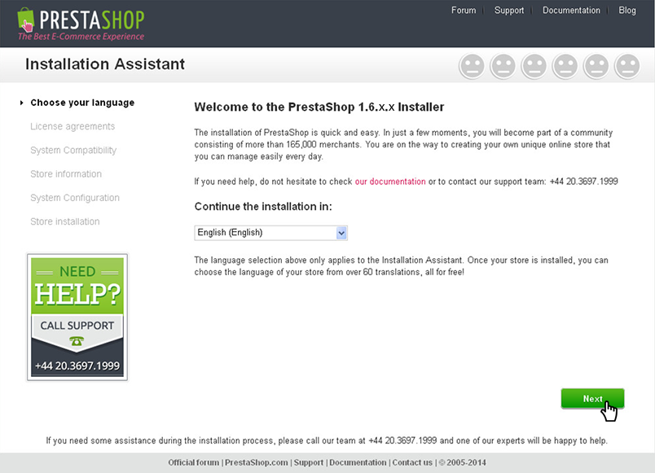
Wenn Sie fertig sind, drücken Sie auf den Schalter 'Next/Weiter'.
Schritt 2: Installationsassistent (Nutzungsbedingungen)
Lesen Sie bitte die Nutzungsbedingungen.
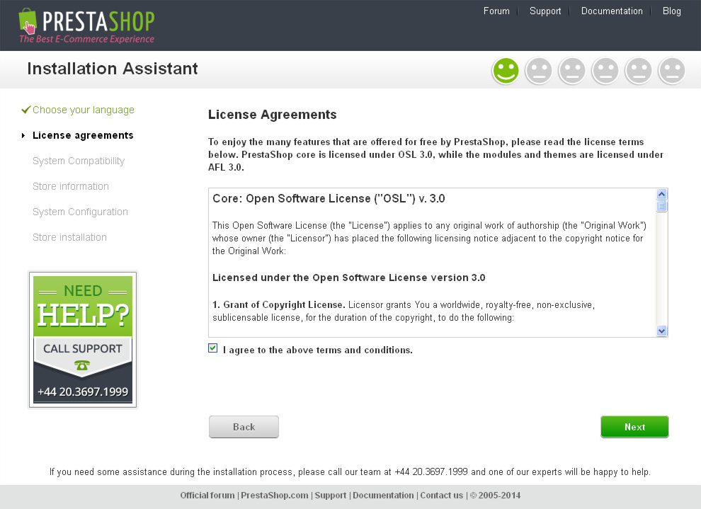Danach drücken Sie auf den Schalter 'Next/Weiter'.
Schritt 3: Systemkompatibilität
Prüfen Sie die PHP-Einstellungen und die Verzeichnis Berechtigungen. Falls Sie Probleme haben, kontaktieren Sie Ihren Hosting-Provider für Hilfe
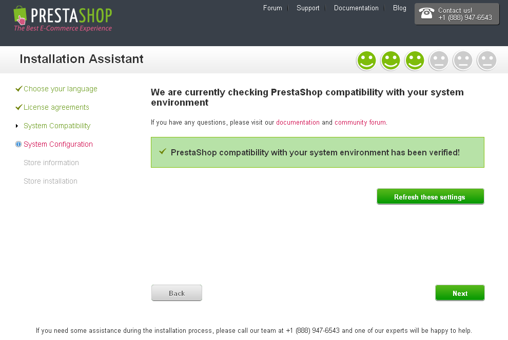Wenn alles richtig ist, drücken Sie auf 'Next/Weiter'.
Schritt 4: System Einstellungen
Wenn Sie schon eine MySQL Datenbank erstellt haben, füllen Sie bitte die folgende Felder mit den passenden Datenbank-Informationen aus.
In jedem Fall können Sie die benötige Datenbank-Informationen in Ihrem Hosting-Control-Panel finden oder kontaktieren Sie einfach Ihren Hosting-Provider.
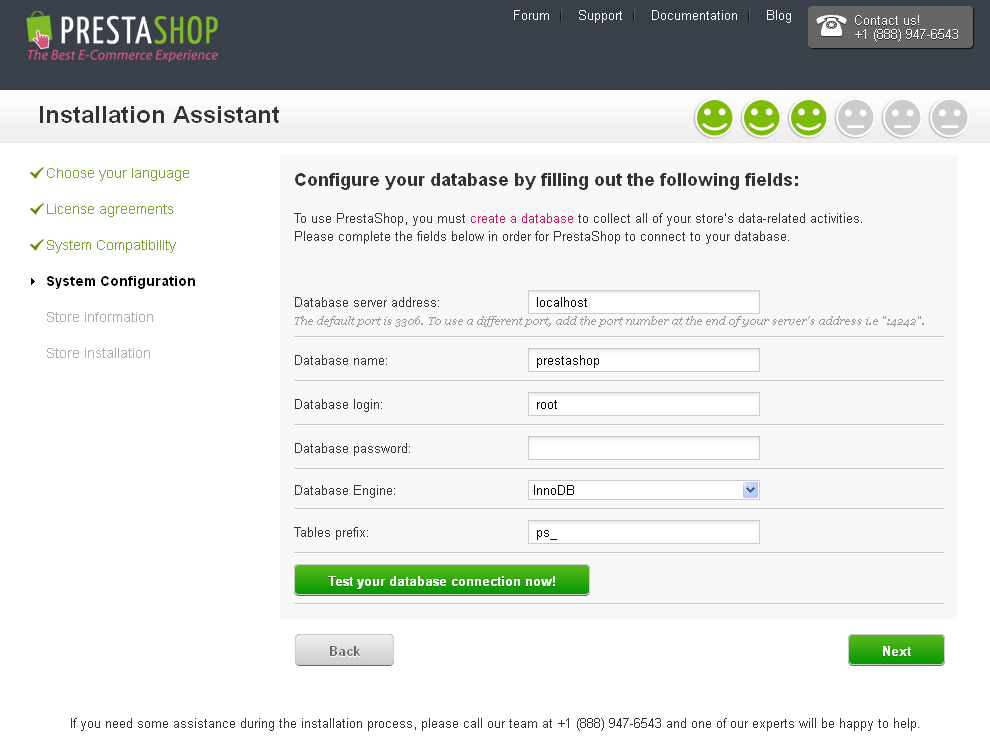Wenn Sie fertig sind, drücken Sie auf den Schalter 'Next/Weiter'.
Schritt 5: Shop Konfiguration
Hier geben Sie die Shop-Einstellungen so wie: Shopname, Tätigkeit, Land, Zeitzone ein und laden Sie Ihr Logo hoch.
Später können Sie im PrestaShop Adminbereich alle diese Einstellungen ändern.
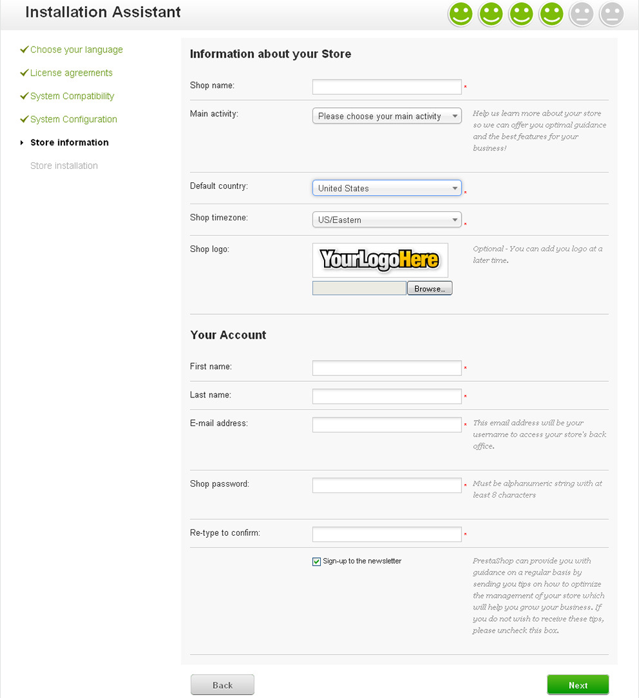Schritt 6: Installation wird abgeschlossen
Das ist der letzte Schritt der PrestaShop-Installation.
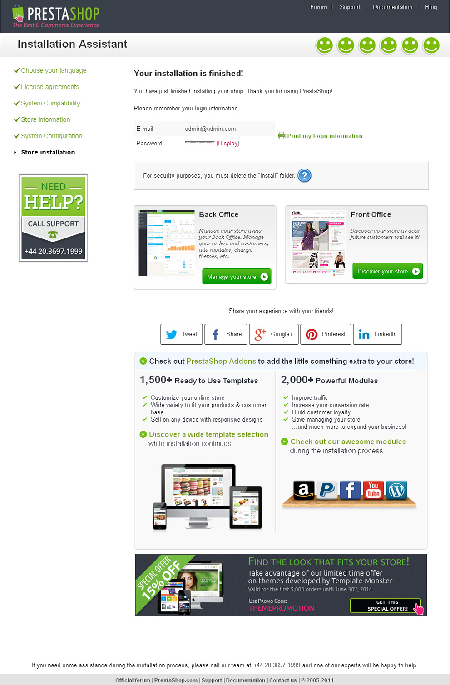Aus Sicherheitsgründen löschen Sie bitte das /install/ Verzeichnis auf Ihrem Hosting Server.
Ab Version 1.5.4 benennt PrestaShop den Administration Ordner selbst um: bekommt er das Word "admin" mit 4 Zehlen, z.B. "admin8814". Er wird umbenennt sobald erreichen Sie erstmals den "admin" Ordner: PrestaShop benennt ihn um, und ruft den umbenennten Ordner.
Loggen Sie sich im PrestaShop Back-Office ein (dafür gehen Sie zum neu-umbenennten "admin" Ordner, und füllen Sie den Katalog mit Ihren Daten aus
Loggen Sie sich im PrestaShop Back-Office ein (dafür gehen Sie zum neu-umbenennten "admin" Ordner, und füllen Sie den Katalog mit Ihren Daten aus
Bei Schwierigkeiten lesen Sie die offizielle PrestaShop Installation Anleitung oder führen Sie das Tutorial Wie man PrestaShop 1.5 Engine installiert aus.
PrestaShop Vorlage installieren
1. Vorlage mit Hilfe vom 'themeinstallator' Modul installieren
Für diese Methode braucht man keine Installation von Beispieldaten.
1. Template-Vorbereitung.
Bevor Sie losgehen, beachten Sie, dass Sie die Vorlage heruntergeladen haben und die Dateien aus Vorlage-Paket mit Hilfe von WinZip und StuffitExpander entpackt haben.
Nach dem Entpacken von Dateien können Sie anfangen die Vorlage hochzuladen.
2. Installation.
Öffnen das PrestaShop Admin Panel, gehen Sie auf Modules->Modules menu (Module -> Module Menü). Auf dieser Seite öffnen Sie den Administration Bereich. Hier gibt es die Liste von verfügbaren Modulen. Finden den 'Import/export a theme v1.4' und klicken Sie auf Configure(Konfigurieren).
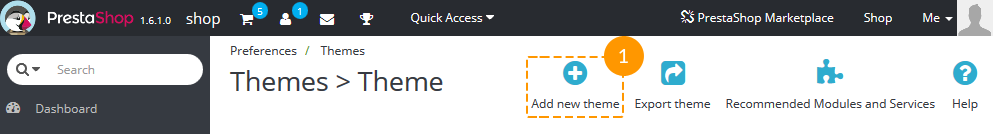Drücken den Schalter Browse(Durchsuchen) und suchen Sie nach den "themeinstallator" Ordner innerhalb des Vorlage-Paketes, um den Archiv mit der Vorlage zu finden:
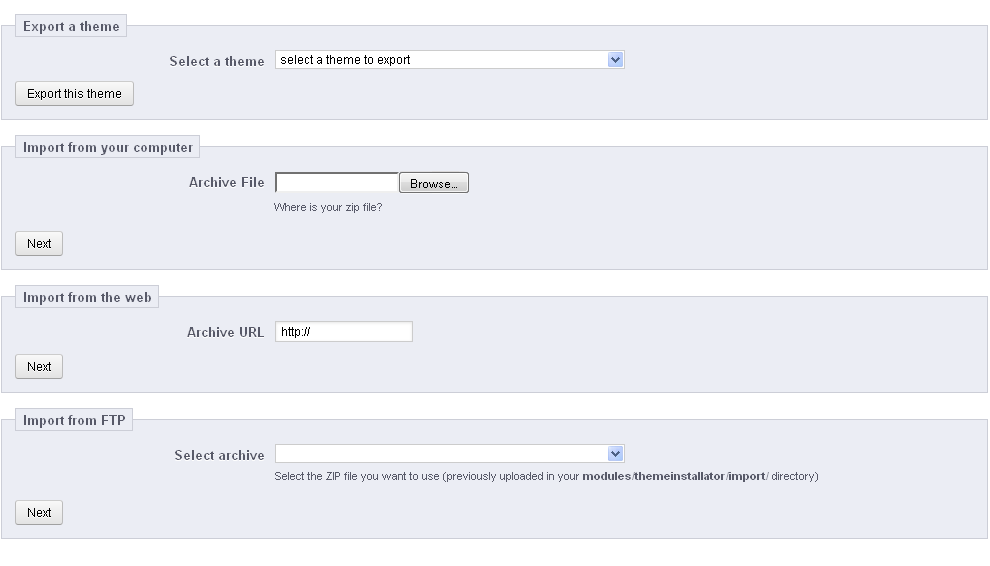Auf der nächsten Seite finden Sie die Information die Information über die installierte Vorlage. Klicken auf Next(weiter).
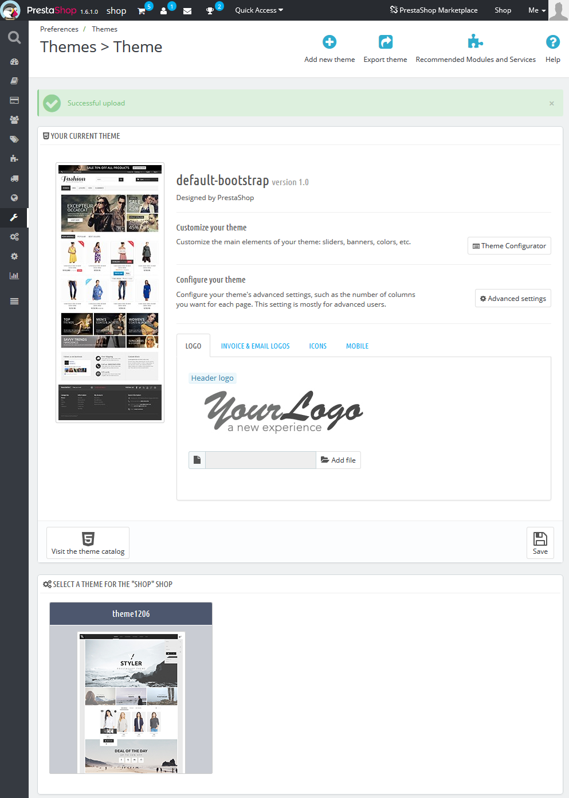Nach diesen Schritten erscheint sich die Meldung über die erfolgreiche Installation Ihrer Vorlage und erscheint sich auch ein Menü mit den Module Einstellungen. Klicken Sie auf Next(weiter).
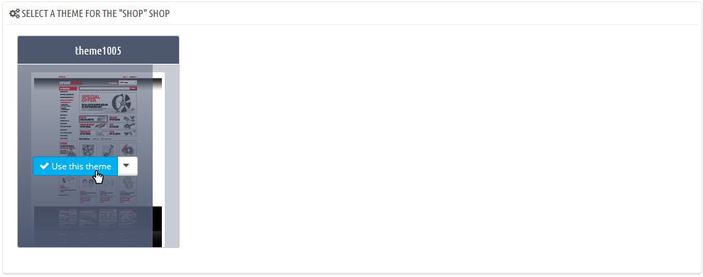Auf dem letzten Schritt finden Sie die Info über die Änderungen, die der Module während der Installation erfüllt hat. Klicken auf Finish.
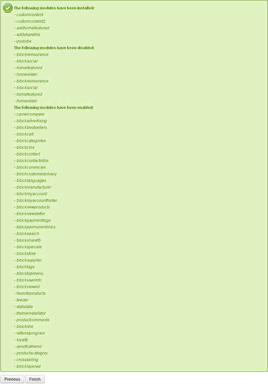
2. Template ohne Beispieldaten installieren
Diese Installationsmethode passt Ihnen, wenn Sie das Shop-Theme verändern möchten. Diese Methode schadet Ihre existierende Dateien oder Produkt-Datenbank nicht.
1. Dateien hochladen und Theme aktivieren
Bevor loslegen, beachten Sie bitte, dass Sie das Template schon heruntergeladen haben und die Dateien vom Vorlage-Paket entpackt haben. Lesen Sie bitte das ausführliche Tutorial über wie man Dateien vom Vorlage Paket mit Hilfe von WinZip und StuffitExpander entpackt.
Nachdem die Dateien extrahiert wurden, laden Sie die Vorlage hoch.
Schauen Sie bitte das ausführliche Video-Tutorial an: Wie man Dateien auf den Server mit Hilfe vom FTP Manager hochladet und Wie man Dateien auf dem Server via cPanel (WebHost Manager, WHM) hochladet.
- Öffnen den Ordner der Vorlage.
- Dann gehen Sie zum /theme/ Ordner.
- Laden Sie die Ordners /img/ , /modules/ und /themes/ im PrestaShop Root-Verzeichnis hoch.
- Nach dem Hochladen öffnen Sie den PrestaShop Adminbereich.
- Im Hauptmenü gehen Sie auf Preferences/ Einstellungen > Appearance/ Aussehen .
- Im Themes Bereich wählen Sie Ihre Vorlage aus und drücken Sie auf dem Button Save/Speichern.
Ihr neues Theme soll aktiv sein. Jetzt konfigurieren wir die Module.
2. Module installieren und konfigurieren
Jede Vorlage hat einige spezifische Einstellungen von Module. Konfigurieren Sie die Module, damit sie gleich wie in der Demo aussehen. Alle Module können im PrestaShop AdminBereich konfiguriert werden.
1. Im PrestaShop Admin-Bereich wählen Sie aus dem Hauptmenü Modules > Modules (Module >Module)aus.
Auf der Modules Seite gibt es die Liste von verfügbaren PrestaShop Module. Möglicherweise müssen Sie einige von Ihnen installieren.
Um den Modul zu installieren, finden Sie ihn in der Liste und drücken Sie auf den Button 'Install/installieren':
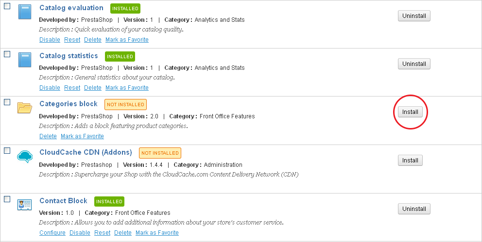Nach der korrekten Installation bekommen Sie die folgende Nachricht:
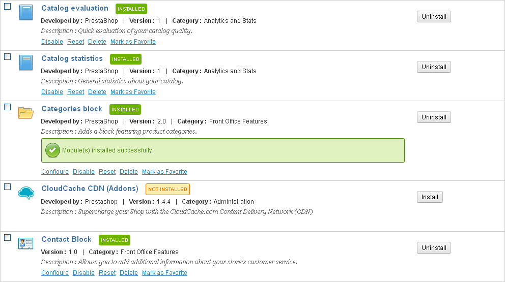Mit den Modul Links können Sie Module aktivieren (Enable/Aktivieren|Disable/ Deaktivieren Links), Einstellungen auf die Standardwerte zurücksetzen (Reset/Zurücksetzen Link), Modul löschen (Delete/Löschen Link) oder sie konfigurieren (Configure/ Konfiguration Link).
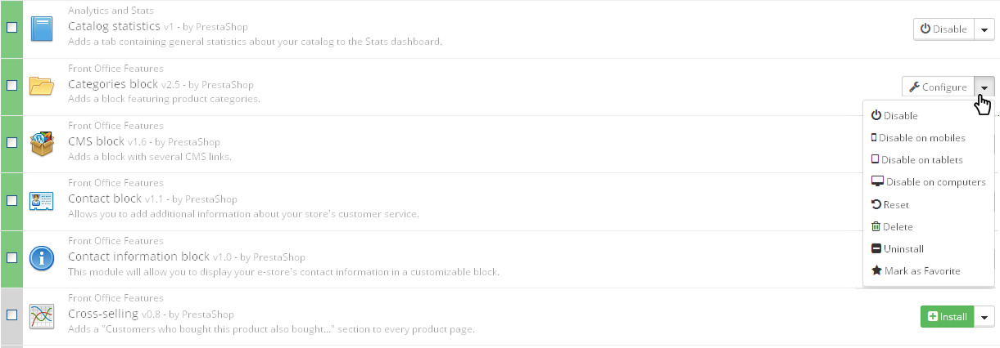2. Nach der Aktivierung von alle benötige Module weisen Sie ihnen korrekten Positionen zu.
Im PrestaShop AdminBereich fahren Sie mit ihrer Maus über den Punkt Modules/Module und klicken anschließend im Untermenü auf Positions/Positionen . Um den Modul im benötigen Position sitzen zu lassen, ziehen Sie ihn einfach zum Position-Bereich der Modul-Liste.
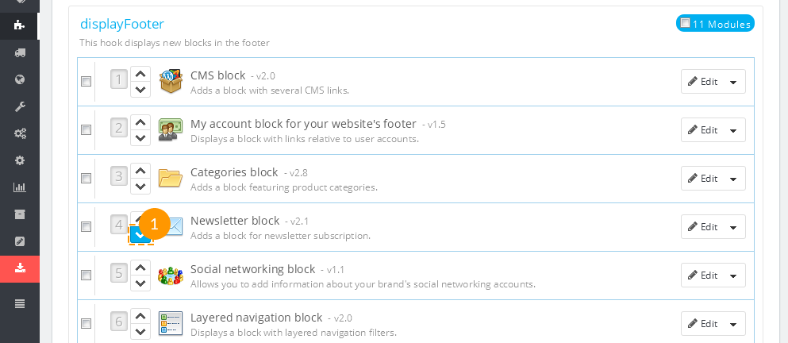Die Liste von Module, die im Theme sind, befindet sich in der nachfolgenden Tabelle:
| Modul Name | Position | Reihenfolge |
|---|---|---|
| Language block v1.1 | Oben auf einer Seite | 1 |
| Currency block v0.1 | Oben auf einer Seite | 2 |
| Permanent links block v0.1 | Oben auf einer Seite | 3 |
| Quick Search block v1.2 | Oben auf einer Seite | 4 |
| User info block v0.1 | Oben auf einer Seite | 5 |
| Top horizontal menu v1.5 | Oben auf einer Seite | 6 |
| Cart block v1.2 | Oben auf einer Seite | 7 |
| CustomContent v1.0 | Inhalte der Startseite | 1 |
| CustomContent2 v1.0 | Inhalte der Startseite | 2 |
| Add Featured Products on the homepage v1.0 | Inhalte der Startseite | 3 |
| Layered navigation block v1.8 | Rechte Spalte Blöcke | 1 |
| Top-seller block v1.1 | Rechte Spalte Blöcke | 2 |
| New products block v0.9 | Rechte Spalte Blöcke | 3 |
| Specials block v0.8 | Rechte Spalte Blöcke | 4 |
| CMS Block v1.1 | Rechte Spalte Blöcke | 5 |
| Viewed products block.v0.9 | Rechte Spalte Blöcke | 6 |
| Tags block v1.1 | Rechte Spalte Blöcke | 7 |
| Manufacturers block v1.0 | Rechte Spalte Blöcke | 8 |
| Suppliers block v1.0 | Rechte Spalte Blöcke | 9 |
| Link block v1.5 | Rechte Spalte Blöcke | 10 |
| CMS Block v1.1 | Footer | 1 |
| My account block for your website's footer v1.2 | Footer | 2 |
| Block contact info v1.0 | Footer | 3 |
3. Bilder konfigurieren
In PrestaShop können Sie festlegende Dimensionen des Bildes für Produktbilder, Kategorienbilder, Hersteller usw benutzen.
Zum Beispiel: die Bilder von 'home' Dimensionen benutzt man normalerweiser für Produktbilder der Kategorien-Liste. 'Large' ist für einen Bild eines Hauptproduktes, das sich auf der Infoseite des Produktes befindet.
Damit Sie Dimensionen des Produktbildes konfigurieren, öffnen Sie PrestaShop AdminPanel, gehen Sie dort auf Preferences/Einstellungen > Images/Bilder und legen die Dimensionen des Bildes fest, wie es unten angezeigt wird:
| Bild | Breite (px) | Höhe (px) |
|---|---|---|
| small_default | 71 | 71 |
| medium_default | 142 | 142 |
| large_default | 500 | 500 |
| thickbox_default | 500 | 500 |
| category_default | 300 | 300 |
| home_default | 270 | 270 |
| scene_default | 520 | 189 |
| m_scene_default | 161 | 58 |
Nach den Änderungen müssen Sie manchmal die Bilder neu generieren. Das erreichen Sie im Bereich Regenerate thumbnails/ Artikelbilder neu generieren.
3. Template mit Beispieldaten installieren
Nach der Installation von Beispieldateien wird Ihr PrestaShop ähnlich wie auf der Vorschauseite aussehen. Dort gibt es alle Beispielprodukte, Einstellungen vom Shop und von Module usw.
Verwenden Sie keine Beispieldateien, wenn Sie eine aktive Webseite haben! Dies überschreibt alle Artikel und Einstellungen Ihres Shops.
1. Dateien der Vorlage hochladen
Damit Sie eine Vorlage auf den Server hochladen
- Öffnen Sie das Vorlage-Paket
- Dann gehen Sie zum /theme/ Ordner
- Im Presta Shop Root-Verzeichnis laden Sie die Ordner /img/, /modules/ und /themes/
Schauen Sie die ausführliche Video-Tutorials an: Wie man Dateien auf den Server mit Hilfe vom FTP Manager hochladet und Wie man Deteien via cPanel hochladet (WebHost Manager, WHM).
2. Beispieldateien installieren
Beispieldateien werden wie eine .SQL Datei geliefert. Die befindet sich im /sources/ Ordner vom Vorlage-Paket und hat normalerweise den Namen dump.sql
Die dump.sql Datei können Sie mit phpMyAdmin oder mit dem Datenbank-Managementinstrument von Ihrem Hosting-Control-Panel. Das ausführliche Tutorial Wie man SQL Dateien installiert kann Ihnen dabei helfen.
Bevor Sie loslegen, erstellen Sie die Sicherungskopie Ihrer Datenbank. Schauen Sie das ausführliche Video-Tutorial anWie man ein Backup von Datenbank macht.
Beachten Sie bitte, dass Ihre Version der PrestaShop Engine alle Vorlage-Anforderungen entspricht. Sonst könnte die Datenbank beschädigt werden.
Nach der Installation der dump.sql Datei, aktivieren Sie das Template.
Im PrestaShop Adminbereich gehen Sie auf Preferences/Einstellungen > Appearance/ Design, wählen Sie im Themes Bereich Ihre Vorlage aus und drücken Sie auf Save/Speichern.
Sprachen zum Online-Shop hinzufügen.
Nach der Installation die mehrsprachige Vorlage sollen Sie alle Sprachen, die Ihre Vorlage hat (English, Französisch, Spanish, Deutsch, Russisch), in der OnlineShop- Plattform einbauen. So erreichen Sie das:
Im Admin Panel gehen Sie auf 'Localization > Translations' ('Localization > Übersetzungen). Dort finden Sie 'Translation exchange', und wählen Sie per DropDown-Menü Sprachen aus, um sie hinzuzufügen und drücken Sie den Button 'Add or update a language'(eine Sprache hinzufügen oder aktualisieren).
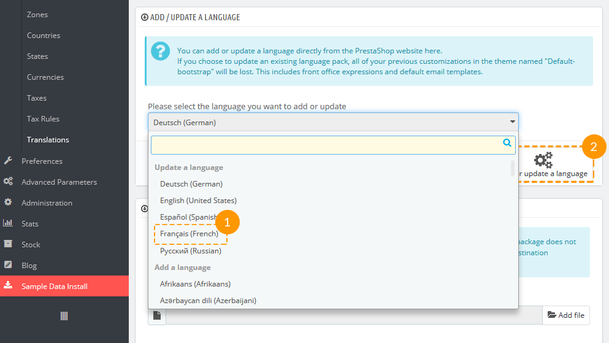Falls Sie einige Sprache nicht hinzufügen möchten, löschen Sie die im Menü 'Localization > Languages'(Localization > Sprachen) oder schalten Sie die aus.
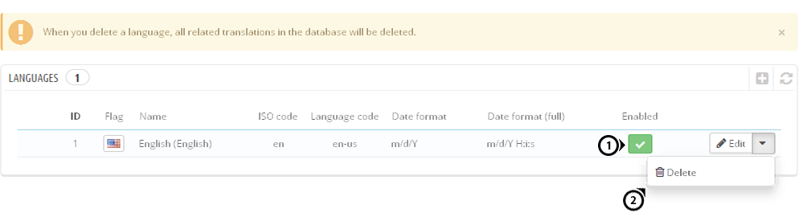4. Template über einen existierenden Shop installieren
Diese Installationsmethode passt Ihnen, wenn Sie die aktive PrestaShop Webseite haben und nun eine neue Vorlage installieren möchten.
1. Dateien hochladen und Theme aktivieren
- Öffnen Sie den Ordner der Vorlage.
- Danach gehen Sie zum /theme/ Ordner.
- Im PrestaShop Root-Verzeichnis laden Sie die Ordner /modules/ und /themes/
- Im Vorlage-Paket öffnen Sie den /img/ Ordner und laden Sie dann Die Dateien logo.jpg, favicon.ico im /img/ Ordner Ihrer PrestaShop Installation
- Im PrestaShop AdminBereich gehen auf Preferences > Themes, wählen Sie Ihre Vorlage im Themes Bereich aus und drücken Sie schließend auf Save/Speichern.
Schauen Sie die ausführliche Video-Tutorials an: Wie man Dateien auf den Server mit Hilfe vom FTP Manager hochladet und Wie man Deteien via cPanel hochladet (WebHost Manager, WHM).
2. Module installieren
Im PrestaShop AdminBereich konfigurieren Sie Module wie es im Bereich Vorlage ohne Beispieldaten installieren ->Module installieren und konfigurieren dieser Anleitung beschreiben wird.
Verwenden Sie keine Beispieldateien, wenn Sie eine aktive Webseite haben, weil alle Artikel und Einstellungen Ihres Shops überschreiben werden. .
3. Bilder konfigurieren
Öffnen Sie Ihr PrestaShop Admin Panel und konfigurieren Sie die Bilder wie es im Bereich Vorlage ohne Beispieldaten installieren ->Bilder konfigurieren dieser Anleitung beschreiben wird.
Basic-Tutorials
1. Wie ändert man den Namen des Shops
Um den Titel des Shops zu verändern, gehen Sie bitte im PrestaShop AdminBereich auf Preferences/Einstellungen > Contact Information/ Kontakt Info.
Im Feld Shop Name geben Sie den Namen Ihres Shops ein und drücken Sie dann auf den Button Save/Speichern.
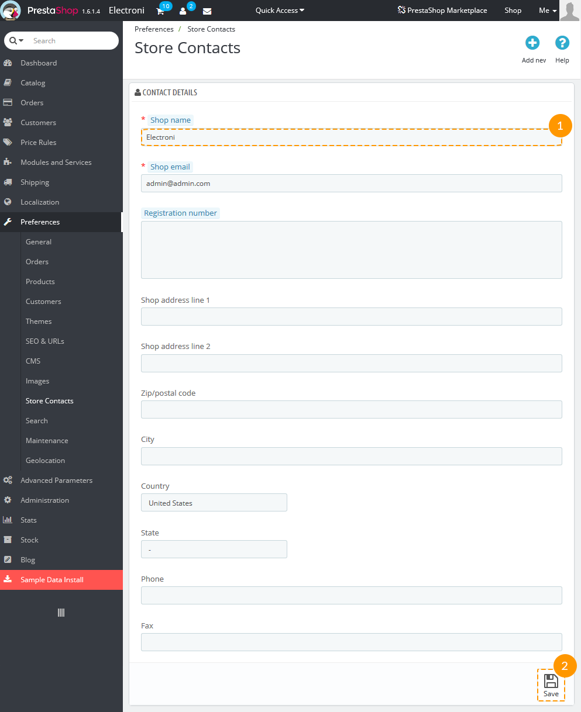2. Wie bearbeitet man Links vom Header und vom Footer
Lesen Sie bitte das ausführliche Tutorial: Wie man Links bearbeitet .
3. Wie man einen Slider bearbeitet
Um die Slider-Bilder zu bearbeiten, finden Sie den minic slider Modul auf der Modules Site von PrestaShop. Er befindet sich im Modul-Bereich Advertising and Marketing (Werbung u. Marketing). Drücken Sie auf den Configure/Konfigurieren Button, um den Modul zu bearbeiten.
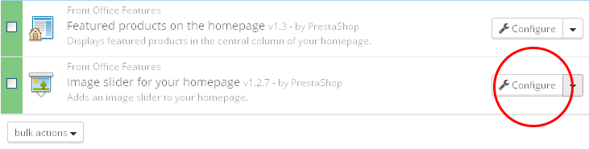Auf der Einstellungsseite des Modules ändern Sie die Optionen des Sliders (wie die Breite, Höhe, Geschwindigkeit, usw.) und bearbeiten Sie Folien (Bilder für Folioen, URLs, Beschreibungen, usw.).
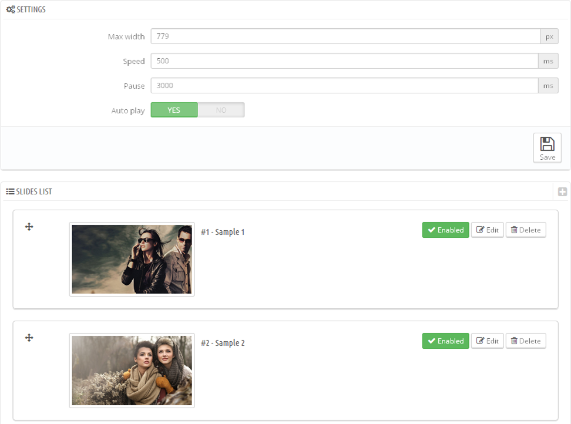